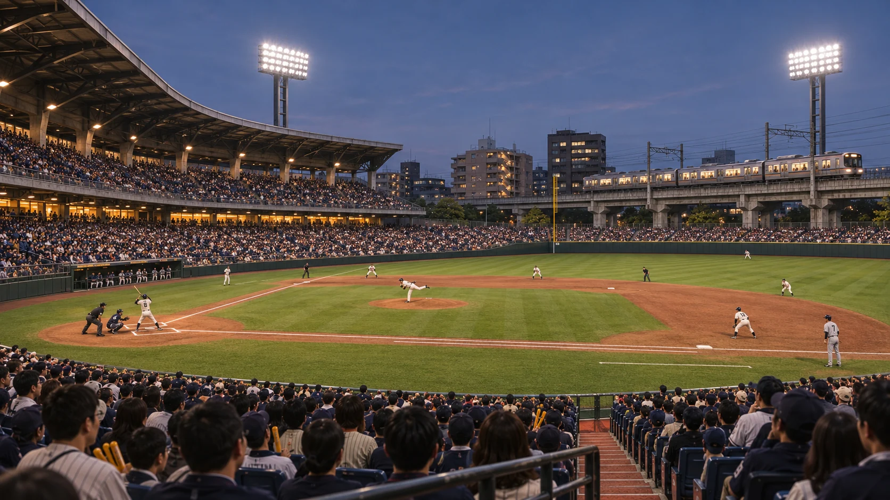
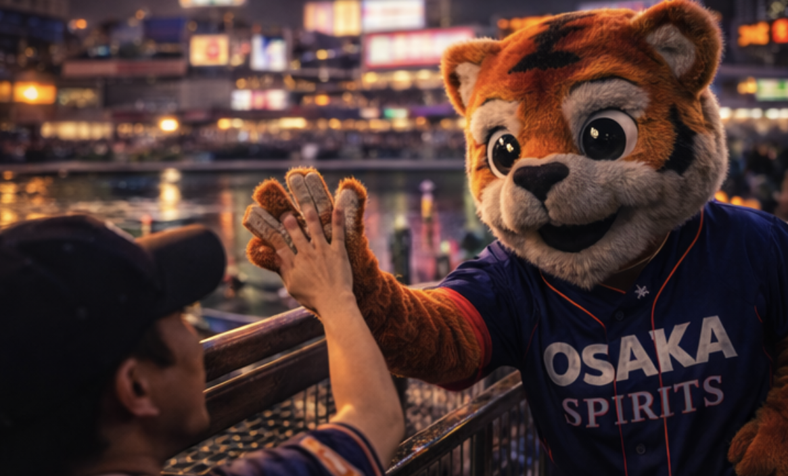

Ryo Tanaka
Tanaka calls the pitch and leaves room for the crowd between deliveries.

The Switchyard · Osaka, Japan
| Player | Pos | B/T | Age |
|---|---|---|---|
| Hiroto Kurobane | SP | R/R | 27 |
| Enzo Dalmau | SP | R/R | 31 |
| Kofi Boateng | SP | L/L | 25 |
| Luka Kovačević | SP | R/R | 29 |
| Rowan Cahir | SP | L/R | 26 |
| Sandeep Nayar | RP | R/R | 28 |
| Mateo Zubillaga | RP | R/R | 24 |
| Jae-min Goh | RP | L/L | 30 |
| Marcelino Quispe | C | R/R | 27 |
| Thabo Mkhize | 1B | L/R | 32 |
| Arman Daryan | 2B | S/R | 23 |
| Kenjiro Suganuma | SS | R/R | 26 |
| Dariusz Kwiatkowski | 3B | R/R | 29 |
| Nikhil Bhandari | CF | R/R | 25 |
| Thiago Ramires | LF | L/L | 22 |
| Yusef El-Badri | RF | R/R | 31 |
Beyond right field, commuter trains pass along an elevated concrete viaduct. The grandstand sits close enough to the diamond for the crack of the bat to reach the concourse. From the first-base rail, you can follow a pitch and catch the train windows in the same glance.
Manager: Kenji “Kōsen” Arai
Tanaka calls the pitch and leaves room for the crowd between deliveries.

Kuroda calls the lineups and substitutions over the park’s public address system.

Signal makes the rounds between innings. In the stands, the tiger in an Osaka Spirits jersey stops for high-fives at the rail.

Chants rise from the Platform End in short bursts. In a close count, the section quiets as the pitcher comes set.